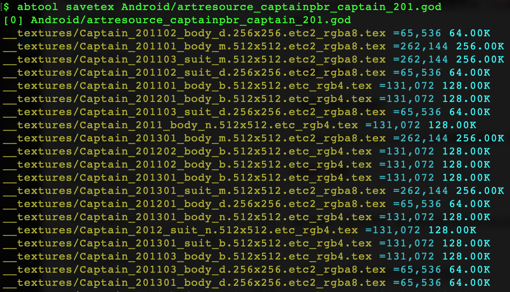

savetex
用途
savetex命令扫描ab文件里面所有Texture2D资源对象并保存为*.tex文件，用Texture2D::m_Name作为文件名前缀，同时追加贴图尺寸以及格式信息。
参数
| 参数 | 缩写 | 描述 |
|---|---|---|
| --output | -o | *.tex文件输出目录，默认：__textures |
示例
abtool savetex Android/artresource_captainpbr_captain_201.god

由于savetex提取出来贴图都是非常见编码格式，通常需要配合工程根目录的python工具textool一起使用，主要作用是把贴图转码为TGA格式，如下。